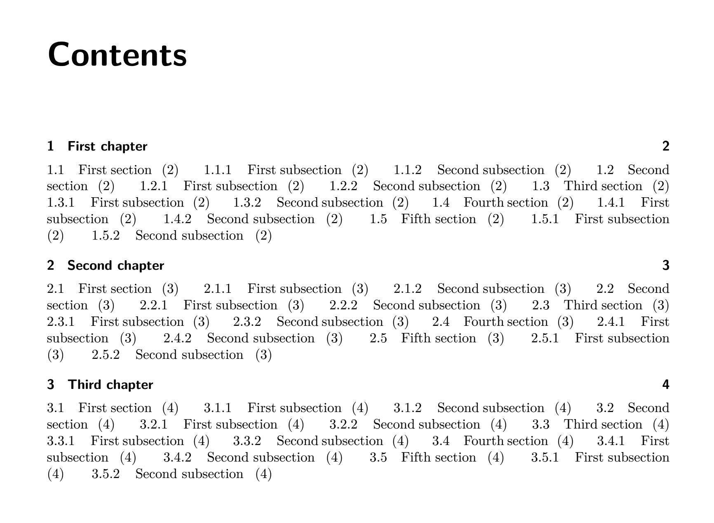

'Innovations' in \(\text{\LaTeX}\)
Horizontal TOC
'The \(\text{\LaTeX}\) kernel is a pathway to many abilities some consider to be unnatural.'
By inserting the code here into the preamble, one can implement a horizontal table of contents (TOC) as seen below.
